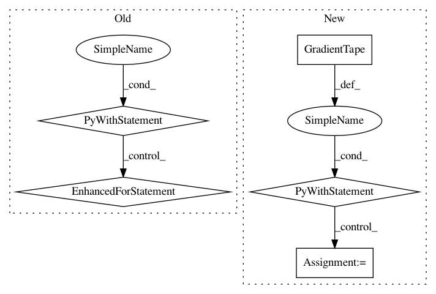

15355d6b1d45c157badd1c21157b529e817b7c3c,tf_agents/agents/reinforce/reinforce_agent.py,ReinforceAgent,_train,#ReinforceAgent#Any#Any#,121
Before Change
)
if self._summarize_grads_and_vars:
with tf.name_scope("Variables/"):
for var in self._actor_network.trainable_weights:
tf.compat.v2.summary.histogram(
name=var.name.replace(":", "_"),
data=var,
step=self.train_step_counter)
return loss_info
@eager_utils.future_in_eager_mode
def _loss(self, time_steps, actions, returns, weights):
After Change
experience.observation)
variables_to_train = self._actor_network.variables
with tf.GradientTape() as tape:
loss_info = self._loss(time_step,
experience.action,
tf.stop_gradient(returns),
weights=weights)
tf.debugging.check_numerics(loss_info.loss, "Loss is inf or nan")
grads = tape.gradient(loss_info.loss, variables_to_train)
grads_and_vars = zip(grads, variables_to_train)
if self._gradient_clipping:
In pattern: SUPERPATTERN
Frequency: 3
Non-data size: 5
Instances
Project Name: tensorflow/agents
Commit Name: 15355d6b1d45c157badd1c21157b529e817b7c3c
Time: 2019-03-08
Author: sfishman@google.com
File Name: tf_agents/agents/reinforce/reinforce_agent.py
Class Name: ReinforceAgent
Method Name: _train
Project Name: horovod/horovod
Commit Name: 65bb3580e5cdd9adee17b5f80fba949550931271
Time: 2019-01-09
Author: 38317191+kuroko1t@users.noreply.github.com
File Name: test/test_tensorflow.py
Class Name: MPITests
Method Name: test_horovod_broadcast_grad
Project Name: horovod/horovod
Commit Name: 65bb3580e5cdd9adee17b5f80fba949550931271
Time: 2019-01-09
Author: 38317191+kuroko1t@users.noreply.github.com
File Name: test/test_tensorflow.py
Class Name: MPITests
Method Name: test_horovod_allreduce_grad